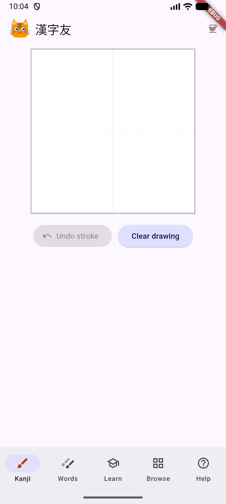
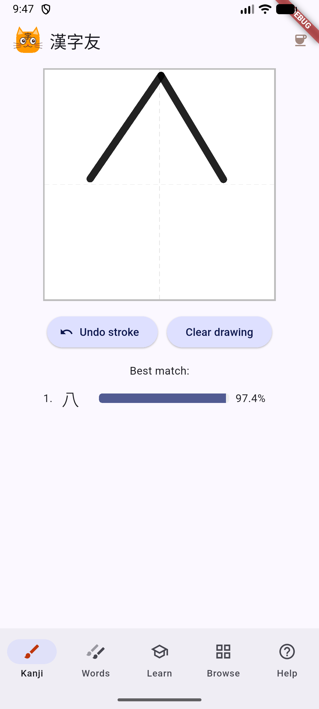
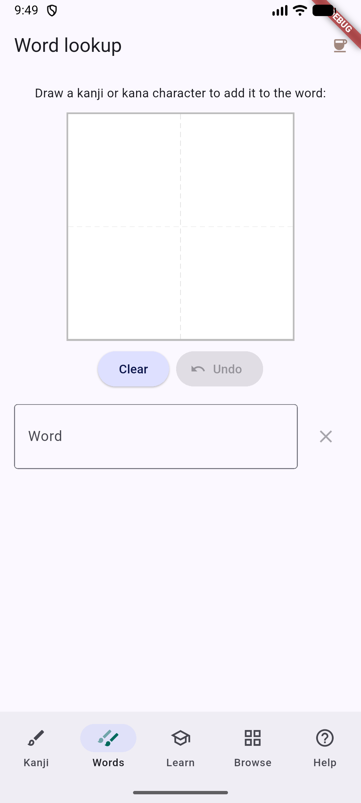
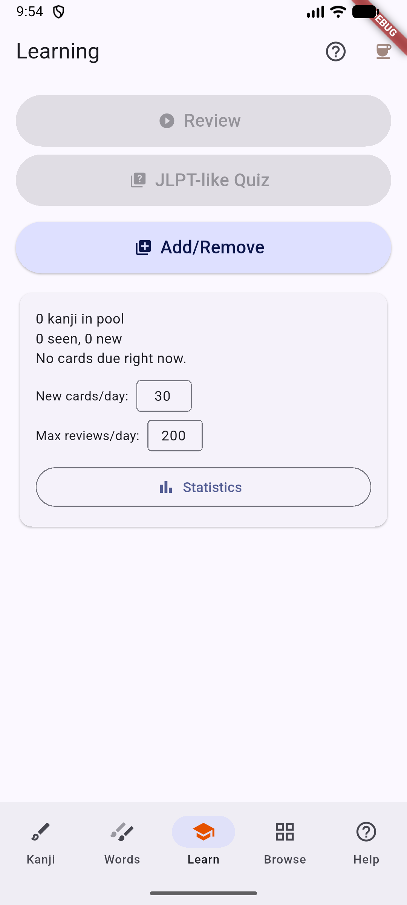
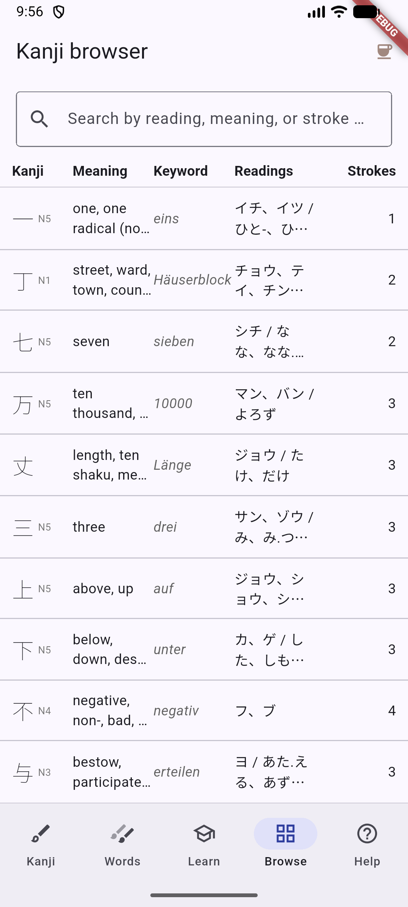
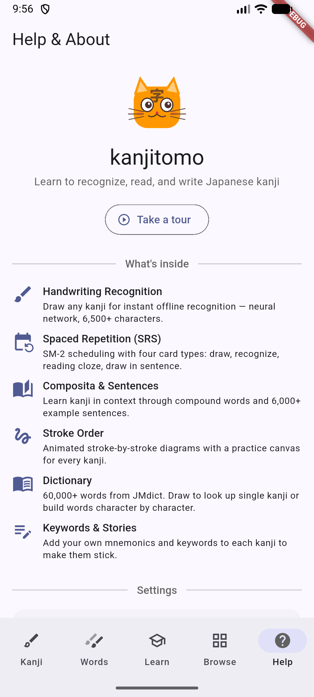

A tool for serious learners
kanjitomo is a kanji learning app built around active recall. Instead of passively flipping flashcards, you draw every kanji by hand — strengthening the motor memory that makes characters stick long-term. The spaced repetition system tests you in four different ways: draw the kanji from its keyword, recognize it, complete a reading cloze, and write it inside a real sentence.
The app doesn't decide what you study. You choose which kanji to add to your review pool — by JLPT level, by browsing the full list, or by picking individual characters. You select which compound words (composita) matter to you. This hands-on approach requires more effort up front, but it means your study deck reflects what you actually need, not a one-size-fits-all curriculum. That makes kanjitomo especially valuable for intermediate and advanced learners who already know the basics and want to fill specific gaps.
Everything runs offline on your device — no internet connection, no account, no tracking. Over 6,500 characters, 60,000+ dictionary entries, and 6,000+ example sentences, all at your fingertips.
The app has five tabs at the bottom of the screen: Kanji, Words, Learn, Browse, and Help.
Kanji Lookup

Draw to look up
The Kanji tab is the main screen. Draw any kanji on the canvas and the neural network will recognize it instantly — even with messy handwriting. It supports over 6,500 characters.
Tap a recognition result to see full details: meanings, readings, stroke order, example sentences, and compound words.

Instant recognition
After drawing, the best matches appear below the canvas with confidence scores. The recognition engine runs entirely offline using a neural network trained on thousands of handwriting samples.
Use Undo stroke to correct mistakes or Clear drawing to start over.
Word Lookup

Build words character by character
The Words tab lets you look up compound words from a dictionary of over 60,000 entries (JMdict). Draw a kanji or kana character to add it to the word field, then search.
This is useful when you encounter an unfamiliar word and want to find its reading and meaning.
Learning Hub

Spaced repetition & quizzes
The Learn tab is your study command center. From here you can:
- Review — Start an SRS session with four card types: draw the kanji, recognize it, fill in a reading cloze, or draw it within a sentence.
- JLPT-like Quiz — Test yourself with multiple-choice questions similar to the Japanese Language Proficiency Test.
- Add/Remove — You decide what to study. Add kanji by JLPT level or hand-pick individual characters. Your review pool is always under your control.
Drawing kanji from memory — rather than just recognizing them — is what separates passive familiarity from real recall. The four card types ensure you can both read and write each character in context.
The card below shows your pool size, due cards, and daily limits. Tap Statistics to see your progress over time.
Kanji Browser

Browse all kanji
The Browse tab lists all kanji sorted by stroke count. Each row shows the character, its English meaning, your personal keyword, readings (on'yomi and kun'yomi), and stroke count.
Use the search bar to filter by reading, meaning, or stroke count. Tap any row to open the kanji detail sheet with stroke order animation, example sentences, and compound words (composita). You choose which composita to focus on — the app tests you on the ones you've selected, so your reviews stay relevant to your actual vocabulary.
Help & Settings

Settings and feature overview
The Help tab shows an overview of all features and lets you configure the app:
- Take a tour — A guided walkthrough of the app's main features.
- Theme & brightness — Choose a color theme and toggle dark mode.
- Recognition model — Switch between the standard and extended recognition model.
Scroll down to find links for support, bug reporting, the privacy policy, and open-source acknowledgements.
How to use kanjitomo
Alongside a JLPT workbook: kanjitomo works well as a companion to a printed kanji workbook for any JLPT level. Add the kanji from each chapter to your review pool and let the spaced repetition reinforce what you study on paper. The drawing-based reviews complement textbook learning by training active recall — you're not just reading kanji, you're reproducing them from memory.
While reading Japanese texts: When you encounter an unfamiliar word in a book, article, or website, switch to the Words tab and draw the characters to look it up. Once you know the word, you can add its kanji to your review pool so it becomes part of your long-term memory. This turns real reading into a natural source of new study material.
Tips
- Everything works offline — no internet connection is required for recognition, reviews, or browsing.
- Add your own keywords and mnemonics to each kanji. Personal associations are stronger than pre-made ones.
- Start with JLPT N5 kanji if you're a beginner. Intermediate and advanced learners can jump straight to the levels or characters they need to fill gaps in.
- Review daily — even a short session of drawing kanji from memory builds the recall that passive study methods can't match.
- Use the stroke order view to learn correct form before adding a kanji to your review pool.
- Pick composita that you actually encounter in reading. A focused deck of words you care about beats a generic list of thousands.